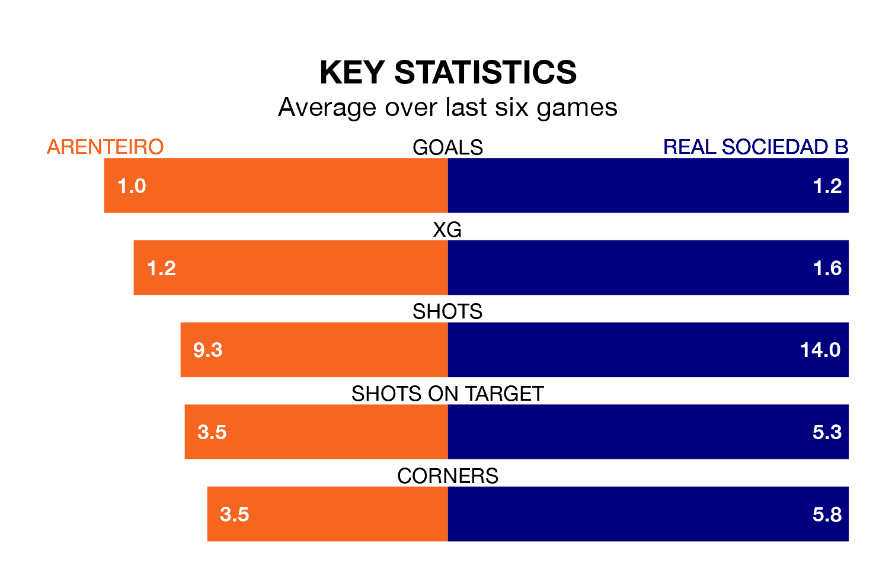

Real Sociedad B travel to Arenteiro on late Sunday in Primera Division RFEF Group 1.
The visitors come into the game on the back of a win in their last match, having beaten Real Unión 3-1 away, with goals from Ekain Azkune Astarloza.
Arenteiro, meanwhile, drew their last match, 2-2 against Rayo Majadahonda, with their goals scored by Agustín Emanuel Pastoriza Cacabelos and Christian Santos.
With 34 goals in 28 games so far this season, Arenteiro are scoring more than average in the league with 1.2 goals per game. And they are conceding at an average rate, letting in 27 goals at a rate of 1.0 per game.
Sociedad B are also above average scorers, with 1.1 goals per game, compared to a league average of 1.0. They have conceded 1.0 goal per game.
In Diego García Vázquez, the hosts can rely on one of the league's safest pair of hands. He has kept 10 clean sheets in his 22 appearances this season in Primera Division RFEF Group 1.
In the away team's net, Gaizka Ayesa Burgui has eight clean sheets in 22 games.
Arenteiro are seventh in the table after 28 games, of which they have won 11 and drawn seven, earning 40 points.
Sociedad B are one place behind Arenteiro in eighth, with nine wins and 11 draws putting them on 38 points.
The home side are in mixed form in Primera Division RFEF Group 1, with three wins and a draw from their last six games.
With two wins and a draw over that period, Sociedad B's form is worse – they have taken seven points from 18, compared to Arenteiro's 10.
Updated: 10:19 (UTC), 22/03/24